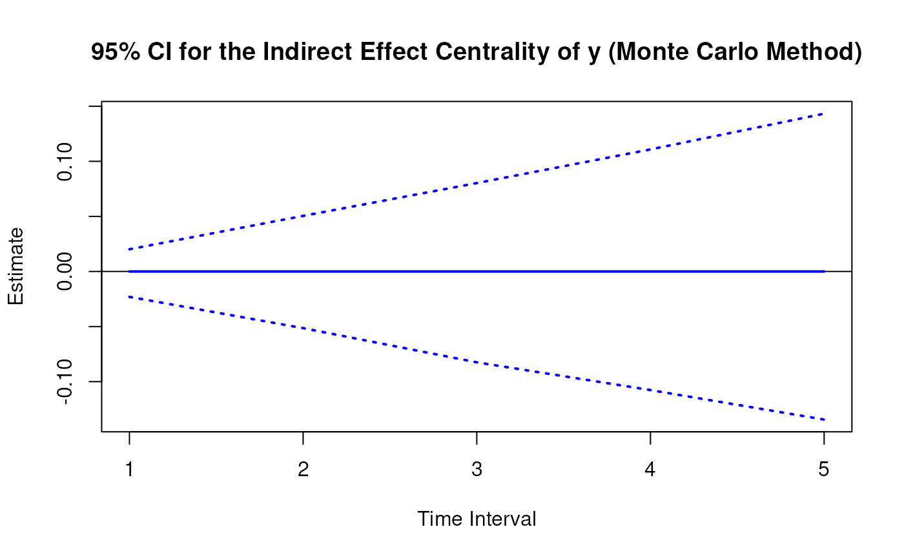
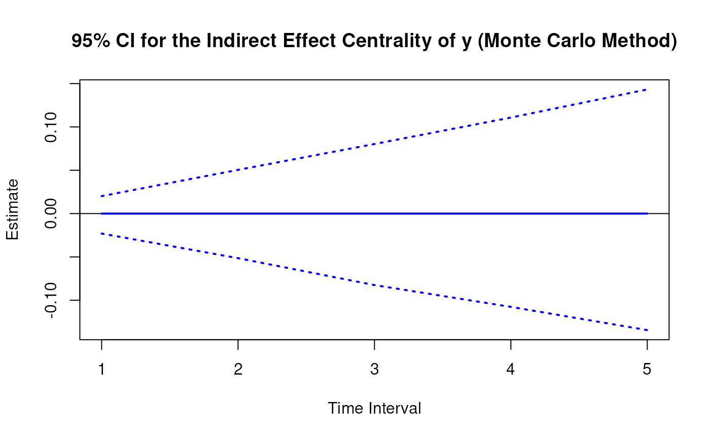

Monte Carlo Sampling Distribution of Indirect Effect Centrality Over a Specific Time-Interval or a Range of Time-Intervals
Source:R/cTMed-mc-indirect-central.R
MCIndirectCentral.RdThis function generates a Monte Carlo method sampling distribution of the indirect effect centrality at a particular time-interval \(\Delta t\) using the first-order stochastic differential equation model drift matrix \(\boldsymbol{\Phi}\).
Usage
MCIndirectCentral(
phi,
vcov_phi_vec,
delta_t,
R,
test_phi = TRUE,
ncores = NULL,
seed = NULL
)Arguments
- phi
Numeric matrix. The drift matrix (\(\boldsymbol{\Phi}\)).
phishould have row and column names pertaining to the variables in the system.- vcov_phi_vec
Numeric matrix. The sampling variance-covariance matrix of \(\mathrm{vec} \left( \boldsymbol{\Phi} \right)\).
- delta_t
Numeric. Time interval (\(\Delta t\)).
- R
Positive integer. Number of replications.
- test_phi
Logical. If
test_phi = TRUE, the function runsTestPhi()on the generated drift matrix \(\boldsymbol{\Phi}\). If theTestPhi()returnsFALSE, the function generates a new drift matrix \(\boldsymbol{\Phi}\) and runs the test recursively untilTestPhi()returnsTRUE.- ncores
Positive integer. Number of cores to use. If
ncores = NULL, use a single core. Consider using multiple cores when number of replicationsRis a large value.- seed
Random seed.
Value
Returns an object
of class ctmedmc which is a list with the following elements:
- call
Function call.
- args
Function arguments.
- fun
Function used (MCIndirectCentral).
- output
A list with length of
length(delta_t).
Each element in the output list has the following elements:
- est
A vector of total, direct, and indirect effects.
- thetahatstar
A matrix of Monte Carlo total, direct, and indirect effects.
Details
See IndirectCentral() for more details.
Monte Carlo Method
Let \(\boldsymbol{\theta}\) be \(\mathrm{vec} \left( \boldsymbol{\Phi} \right)\), that is, the elements of the \(\boldsymbol{\Phi}\) matrix in vector form sorted column-wise. Let \(\hat{\boldsymbol{\theta}}\) be \(\mathrm{vec} \left( \hat{\boldsymbol{\Phi}} \right)\). Based on the asymptotic properties of maximum likelihood estimators, we can assume that estimators are normally distributed around the population parameters. $$ \hat{\boldsymbol{\theta}} \sim \mathcal{N} \left( \boldsymbol{\theta}, \mathbb{V} \left( \hat{\boldsymbol{\theta}} \right) \right) $$ Using this distributional assumption, a sampling distribution of \(\hat{\boldsymbol{\theta}}\) which we refer to as \(\hat{\boldsymbol{\theta}}^{\ast}\) can be generated by replacing the population parameters with sample estimates, that is, $$ \hat{\boldsymbol{\theta}}^{\ast} \sim \mathcal{N} \left( \hat{\boldsymbol{\theta}}, \hat{\mathbb{V}} \left( \hat{\boldsymbol{\theta}} \right) \right) . $$ Let \(\mathbf{g} \left( \hat{\boldsymbol{\theta}} \right)\) be a parameter that is a function of the estimated parameters. A sampling distribution of \(\mathbf{g} \left( \hat{\boldsymbol{\theta}} \right)\) , which we refer to as \(\mathbf{g} \left( \hat{\boldsymbol{\theta}}^{\ast} \right)\) , can be generated by using the simulated estimates to calculate \(\mathbf{g}\). The standard deviations of the simulated estimates are the standard errors. Percentiles corresponding to \(100 \left( 1 - \alpha \right) \%\) are the confidence intervals.
Linear Stochastic Differential Equation Model
The measurement model is given by $$ \mathbf{y}_{i, t} = \boldsymbol{\nu} + \boldsymbol{\Lambda} \boldsymbol{\eta}_{i, t} + \boldsymbol{\varepsilon}_{i, t}, \quad \mathrm{with} \quad \boldsymbol{\varepsilon}_{i, t} \sim \mathcal{N} \left( \mathbf{0}, \boldsymbol{\Theta} \right) $$ where \(\mathbf{y}_{i, t}\), \(\boldsymbol{\eta}_{i, t}\), and \(\boldsymbol{\varepsilon}_{i, t}\) are random variables and \(\boldsymbol{\nu}\), \(\boldsymbol{\Lambda}\), and \(\boldsymbol{\Theta}\) are model parameters. \(\mathbf{y}_{i, t}\) represents a vector of observed random variables, \(\boldsymbol{\eta}_{i, t}\) a vector of latent random variables, and \(\boldsymbol{\varepsilon}_{i, t}\) a vector of random measurement errors, at time \(t\) and individual \(i\). \(\boldsymbol{\nu}\) denotes a vector of intercepts, \(\boldsymbol{\Lambda}\) a matrix of factor loadings, and \(\boldsymbol{\Theta}\) the covariance matrix of \(\boldsymbol{\varepsilon}\).
An alternative representation of the measurement error is given by $$ \boldsymbol{\varepsilon}_{i, t} = \boldsymbol{\Theta}^{\frac{1}{2}} \mathbf{z}_{i, t}, \quad \mathrm{with} \quad \mathbf{z}_{i, t} \sim \mathcal{N} \left( \mathbf{0}, \mathbf{I} \right) $$ where \(\mathbf{z}_{i, t}\) is a vector of independent standard normal random variables and \( \left( \boldsymbol{\Theta}^{\frac{1}{2}} \right) \left( \boldsymbol{\Theta}^{\frac{1}{2}} \right)^{\prime} = \boldsymbol{\Theta} . \)
The dynamic structure is given by $$ \mathrm{d} \boldsymbol{\eta}_{i, t} = \left( \boldsymbol{\iota} + \boldsymbol{\Phi} \boldsymbol{\eta}_{i, t} \right) \mathrm{d}t + \boldsymbol{\Sigma}^{\frac{1}{2}} \mathrm{d} \mathbf{W}_{i, t} $$ where \(\boldsymbol{\iota}\) is a term which is unobserved and constant over time, \(\boldsymbol{\Phi}\) is the drift matrix which represents the rate of change of the solution in the absence of any random fluctuations, \(\boldsymbol{\Sigma}\) is the matrix of volatility or randomness in the process, and \(\mathrm{d}\boldsymbol{W}\) is a Wiener process or Brownian motion, which represents random fluctuations.
References
Bollen, K. A. (1987). Total, direct, and indirect effects in structural equation models. Sociological Methodology, 17, 37. doi:10.2307/271028
Deboeck, P. R., & Preacher, K. J. (2015). No need to be discrete: A method for continuous time mediation analysis. Structural Equation Modeling: A Multidisciplinary Journal, 23 (1), 61–75. doi:10.1080/10705511.2014.973960
Ryan, O., & Hamaker, E. L. (2021). Time to intervene: A continuous-time approach to network analysis and centrality. Psychometrika, 87 (1), 214–252. doi:10.1007/s11336-021-09767-0
See also
Other Continuous Time Mediation Functions:
DeltaBeta(),
DeltaIndirectCentral(),
DeltaMed(),
DeltaTotalCentral(),
Direct(),
Indirect(),
IndirectCentral(),
MCMed(),
MCPhi(),
MCTotalCentral(),
Med(),
PosteriorIndirectCentral(),
PosteriorMed(),
PosteriorPhi(),
PosteriorTotalCentral(),
TestPhi(),
TestStable(),
Total(),
TotalCentral()
Examples
set.seed(42)
phi <- matrix(
data = c(
-0.357, 0.771, -0.450,
0.0, -0.511, 0.729,
0, 0, -0.693
),
nrow = 3
)
colnames(phi) <- rownames(phi) <- c("x", "m", "y")
vcov_phi_vec <- matrix(
data = c(
0.002704274, -0.001475275, 0.000949122,
-0.001619422, 0.000885122, -0.000569404,
0.00085493, -0.000465824, 0.000297815,
-0.001475275, 0.004428442, -0.002642303,
0.000980573, -0.00271817, 0.001618805,
-0.000586921, 0.001478421, -0.000871547,
0.000949122, -0.002642303, 0.006402668,
-0.000697798, 0.001813471, -0.004043138,
0.000463086, -0.001120949, 0.002271711,
-0.001619422, 0.000980573, -0.000697798,
0.002079286, -0.001152501, 0.000753,
-0.001528701, 0.000820587, -0.000517524,
0.000885122, -0.00271817, 0.001813471,
-0.001152501, 0.00342605, -0.002075005,
0.000899165, -0.002532849, 0.001475579,
-0.000569404, 0.001618805, -0.004043138,
0.000753, -0.002075005, 0.004984032,
-0.000622255, 0.001634917, -0.003705661,
0.00085493, -0.000586921, 0.000463086,
-0.001528701, 0.000899165, -0.000622255,
0.002060076, -0.001096684, 0.000686386,
-0.000465824, 0.001478421, -0.001120949,
0.000820587, -0.002532849, 0.001634917,
-0.001096684, 0.003328692, -0.001926088,
0.000297815, -0.000871547, 0.002271711,
-0.000517524, 0.001475579, -0.003705661,
0.000686386, -0.001926088, 0.004726235
),
nrow = 9
)
# Specific time-interval ----------------------------------------------------
MCIndirectCentral(
phi = phi,
vcov_phi_vec = vcov_phi_vec,
delta_t = 1,
R = 100L # use a large value for R in actual research
)
#>
#> Indirect Effect Centrality
#>
#> $`1`
#> interval est se R 2.5% 97.5%
#> x 1 0.0000 0.0129 100 -0.0283 0.0230
#> m 1 0.1674 0.0200 100 0.1277 0.2001
#> y 1 0.0000 0.0116 100 -0.0192 0.0243
#>
# Range of time-intervals ---------------------------------------------------
mc <- MCIndirectCentral(
phi = phi,
vcov_phi_vec = vcov_phi_vec,
delta_t = 1:5,
R = 100L # use a large value for R in actual research
)
plot(mc)


 # Methods -------------------------------------------------------------------
# MCIndirectCentral has a number of methods including
# print, summary, confint, and plot
print(mc)
#>
#> Indirect Effect Centrality
#>
#> $`1`
#> interval est se R 2.5% 97.5%
#> x 1 0.0000 0.0105 100 -0.0195 0.0204
#> m 1 0.1674 0.0200 100 0.1239 0.1993
#> y 1 0.0000 0.0096 100 -0.0175 0.0174
#>
#> $`2`
#> interval est se R 2.5% 97.5%
#> x 2 0.0000 0.0208 100 -0.0383 0.0401
#> m 2 0.4008 0.0411 100 0.3091 0.4667
#> y 2 0.0000 0.0189 100 -0.0345 0.0337
#>
#> $`3`
#> interval est se R 2.5% 97.5%
#> x 3 0.0000 0.0259 100 -0.0462 0.0499
#> m 3 0.5423 0.0522 100 0.4356 0.6286
#> y 3 0.0000 0.0261 100 -0.0469 0.0489
#>
#> $`4`
#> interval est se R 2.5% 97.5%
#> x 4 0.0000 0.0287 100 -0.0500 0.0569
#> m 4 0.5823 0.0574 100 0.4657 0.6885
#> y 4 0.0000 0.0348 100 -0.0598 0.0614
#>
#> $`5`
#> interval est se R 2.5% 97.5%
#> x 5 0.0000 0.0308 100 -0.0558 0.0618
#> m 5 0.5521 0.0595 100 0.4406 0.6662
#> y 5 0.0000 0.0435 100 -0.0737 0.0752
#>
summary(mc)
#> variable interval est se R 2.5% 97.5%
#> 1 x 1 0.000000e+00 0.010488048 100 -0.01945724 0.02036598
#> 2 m 1 1.674155e-01 0.020029011 100 0.12393999 0.19929957
#> 3 y 1 0.000000e+00 0.009642906 100 -0.01749498 0.01742023
#> 4 x 2 0.000000e+00 0.020833467 100 -0.03826460 0.04008505
#> 5 m 2 4.008043e-01 0.041083511 100 0.30905795 0.46665886
#> 6 y 2 0.000000e+00 0.018853593 100 -0.03451810 0.03366545
#> 7 x 3 0.000000e+00 0.025852025 100 -0.04623497 0.04986494
#> 8 m 3 5.422564e-01 0.052168884 100 0.43556642 0.62860175
#> 9 y 3 -3.330669e-16 0.026088495 100 -0.04685600 0.04885874
#> 10 x 4 0.000000e+00 0.028727769 100 -0.05004759 0.05693784
#> 11 m 4 5.823179e-01 0.057429611 100 0.46567310 0.68846611
#> 12 y 4 0.000000e+00 0.034803457 100 -0.05977013 0.06135999
#> 13 x 5 0.000000e+00 0.030835069 100 -0.05577598 0.06183490
#> 14 m 5 5.520985e-01 0.059511667 100 0.44063183 0.66624186
#> 15 y 5 0.000000e+00 0.043504913 100 -0.07366080 0.07515086
confint(mc, level = 0.95)
#> variable interval 2.5 % 97.5 %
#> 1 x 1 -0.01945724 0.02036598
#> 2 m 1 0.12393999 0.19929957
#> 3 y 1 -0.01749498 0.01742023
#> 4 x 2 -0.03826460 0.04008505
#> 5 m 2 0.30905795 0.46665886
#> 6 y 2 -0.03451810 0.03366545
#> 7 x 3 -0.04623497 0.04986494
#> 8 m 3 0.43556642 0.62860175
#> 9 y 3 -0.04685600 0.04885874
#> 10 x 4 -0.05004759 0.05693784
#> 11 m 4 0.46567310 0.68846611
#> 12 y 4 -0.05977013 0.06135999
#> 13 x 5 -0.05577598 0.06183490
#> 14 m 5 0.44063183 0.66624186
#> 15 y 5 -0.07366080 0.07515086
plot(mc)
# Methods -------------------------------------------------------------------
# MCIndirectCentral has a number of methods including
# print, summary, confint, and plot
print(mc)
#>
#> Indirect Effect Centrality
#>
#> $`1`
#> interval est se R 2.5% 97.5%
#> x 1 0.0000 0.0105 100 -0.0195 0.0204
#> m 1 0.1674 0.0200 100 0.1239 0.1993
#> y 1 0.0000 0.0096 100 -0.0175 0.0174
#>
#> $`2`
#> interval est se R 2.5% 97.5%
#> x 2 0.0000 0.0208 100 -0.0383 0.0401
#> m 2 0.4008 0.0411 100 0.3091 0.4667
#> y 2 0.0000 0.0189 100 -0.0345 0.0337
#>
#> $`3`
#> interval est se R 2.5% 97.5%
#> x 3 0.0000 0.0259 100 -0.0462 0.0499
#> m 3 0.5423 0.0522 100 0.4356 0.6286
#> y 3 0.0000 0.0261 100 -0.0469 0.0489
#>
#> $`4`
#> interval est se R 2.5% 97.5%
#> x 4 0.0000 0.0287 100 -0.0500 0.0569
#> m 4 0.5823 0.0574 100 0.4657 0.6885
#> y 4 0.0000 0.0348 100 -0.0598 0.0614
#>
#> $`5`
#> interval est se R 2.5% 97.5%
#> x 5 0.0000 0.0308 100 -0.0558 0.0618
#> m 5 0.5521 0.0595 100 0.4406 0.6662
#> y 5 0.0000 0.0435 100 -0.0737 0.0752
#>
summary(mc)
#> variable interval est se R 2.5% 97.5%
#> 1 x 1 0.000000e+00 0.010488048 100 -0.01945724 0.02036598
#> 2 m 1 1.674155e-01 0.020029011 100 0.12393999 0.19929957
#> 3 y 1 0.000000e+00 0.009642906 100 -0.01749498 0.01742023
#> 4 x 2 0.000000e+00 0.020833467 100 -0.03826460 0.04008505
#> 5 m 2 4.008043e-01 0.041083511 100 0.30905795 0.46665886
#> 6 y 2 0.000000e+00 0.018853593 100 -0.03451810 0.03366545
#> 7 x 3 0.000000e+00 0.025852025 100 -0.04623497 0.04986494
#> 8 m 3 5.422564e-01 0.052168884 100 0.43556642 0.62860175
#> 9 y 3 -3.330669e-16 0.026088495 100 -0.04685600 0.04885874
#> 10 x 4 0.000000e+00 0.028727769 100 -0.05004759 0.05693784
#> 11 m 4 5.823179e-01 0.057429611 100 0.46567310 0.68846611
#> 12 y 4 0.000000e+00 0.034803457 100 -0.05977013 0.06135999
#> 13 x 5 0.000000e+00 0.030835069 100 -0.05577598 0.06183490
#> 14 m 5 5.520985e-01 0.059511667 100 0.44063183 0.66624186
#> 15 y 5 0.000000e+00 0.043504913 100 -0.07366080 0.07515086
confint(mc, level = 0.95)
#> variable interval 2.5 % 97.5 %
#> 1 x 1 -0.01945724 0.02036598
#> 2 m 1 0.12393999 0.19929957
#> 3 y 1 -0.01749498 0.01742023
#> 4 x 2 -0.03826460 0.04008505
#> 5 m 2 0.30905795 0.46665886
#> 6 y 2 -0.03451810 0.03366545
#> 7 x 3 -0.04623497 0.04986494
#> 8 m 3 0.43556642 0.62860175
#> 9 y 3 -0.04685600 0.04885874
#> 10 x 4 -0.05004759 0.05693784
#> 11 m 4 0.46567310 0.68846611
#> 12 y 4 -0.05977013 0.06135999
#> 13 x 5 -0.05577598 0.06183490
#> 14 m 5 0.44063183 0.66624186
#> 15 y 5 -0.07366080 0.07515086
plot(mc)

 
